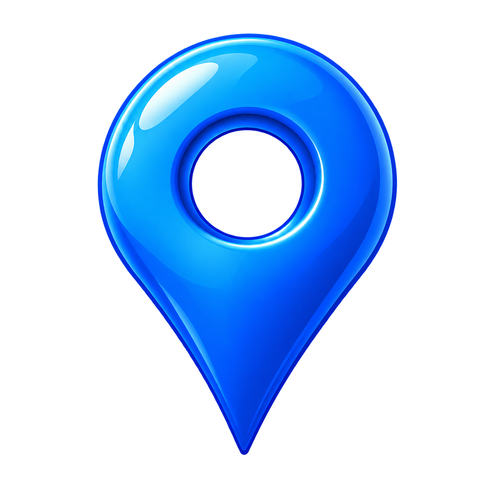
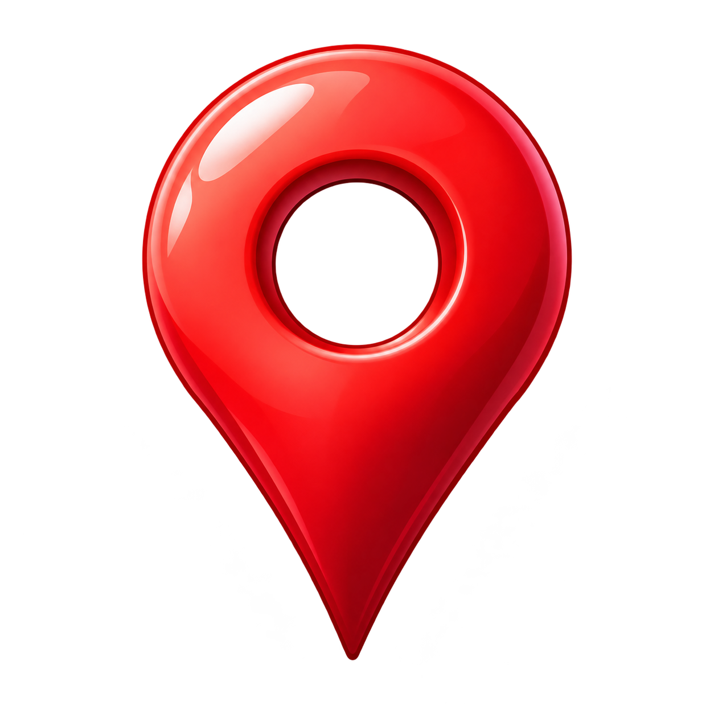

<!DOCTYPE html>

<html lang="ja">

<head>

<meta charset="UTF-8">

<meta name="viewport" content="width=device-width,initial-scale=1">

<title>ミスターXからの挑戦状 事件ファイル Ver.1</title>

<style>

*{box-sizing:border-box}

body{margin:0;background:#080b12;color:#eee;font-family:serif;text-align:center}

main{max-width:750px;margin:auto;min-height:100vh;background:#101620;padding-bottom:35px}

.scene{width:100%;max-height:65vh;object-fit:contain;display:block;background:#05070a}

h1{font-size:22px;margin:18px 12px}

h2{font-size:19px}

p{line-height:1.9;margin:18px;padding:0 8px}

button{display:block;width:90%;margin:12px auto;padding:15px;background:#18283a;color:white;border:1px solid #77879a;border-radius:8px;font-size:16px}

button:active{background:#5b2530}

.note{color:#aaa;font-size:12px}

.red{color:#f36b75}

#inventory{border-top:1px solid #555;margin:25px 15px;padding:15px}


.pin-photo{position:relative}

.pin-photo .scene{display:block}

.pin-marker{position:absolute;right:12px;bottom:12px;width:45px;cursor:pointer}
</style>

</head>

<body>

<main>

<div id="app"></div>

</main>

<script>

const files={

 title:"mister_x_case_v1_title.png.PNG",

 office:"office.PNG",

 box:"box.PNG",

 shrine:"a_shrine.PNG",

 river:"a_discovery.PNG",


bshop:"b_shop.PNG",

bdiscovery:"b_discovery.PNG",

bhome:"b_home.PNG",
 

cpark:"c_park.PNG",

clastseen:"c_lastseen.PNG",

cdiscovery:"c_discovery.PNG",
 

home:"a_home.PNG",

dlastseen:"D_last_seen.PNG",

ddiscovery:"D_discovery.PNG",

elastseen:"E_last_seen.PNG"

};

  


let images={};


let bState={

  inspected:{

    bshop:[],

    bdiscovery:[],

    bhome:[]

  },

  pins:{

    bshop:false,

    bdiscovery:false,

    bhome:false

  }

};
 

function saveBState(){

  localStorage.setItem("caseV1BState",JSON.stringify(bState));

}
let visited={shrine:0,river:0,home:0};

let inspected={shrine:[],river:[],home:[]};


let pins=Object.assign(

  {

    shrine:false,

    river:false,

    home:false,

    cdiscovery:false,

    dlastseen:false,

    ddiscovery:false,

    elastseen:false

  },

  JSON.parse(localStorage.getItem("caseV1Pins")||"{}")

);
function savePins(){

  localStorage.setItem("caseV1Pins",JSON.stringify(pins));

}
 

let places={};
let current="title";

const app=document.getElementById("app");

function locate(key){

 const name=files[key];

 const path=name;

 return path||"";
 

}

function picture(key){

 const src=locate(key);

 return src?``:"";

}

function show(html){

 app.innerHTML=html;

 window.scrollTo(0,0);

}

function button(label,action){

 return `<button onclick="${action}">${label}</button>`;

}
function startNew(){

  localStorage.removeItem("caseV1Pins");


localStorage.removeItem("caseV1Visited");

localStorage.removeItem("caseV1Inspected");


pins={shrine:false,river:false,home:false,cdiscovery:false,dlastseen:false,ddiscovery:false,elastseen:false};

  visited={shrine:0,river:0,home:0};

  inspected={shrine:[],river:[],home:[]};


localStorage.removeItem("caseV1BState");

bState.inspected={bshop:[],bdiscovery:[],bhome:[]};

bState.pins={bshop:false,bdiscovery:false,bhome:false};
  go("office");

}


function continueGame(){


pins=Object.assign(

  {

    shrine:false,

    river:false,

    home:false,

    cdiscovery:false,

    dlastseen:false,

    ddiscovery:false,

    elastseen:false

  },

  JSON.parse(localStorage.getItem("caseV1Pins")||"{}")

);
  visited=JSON.parse(localStorage.getItem("caseV1Visited")||'{"shrine":0,"river":0,"home":0}');

  inspected=JSON.parse(localStorage.getItem("caseV1Inspected")||'{"shrine":[],"river":[],"home":[]}');


bState=JSON.parse(localStorage.getItem("caseV1BState")||JSON.stringify(bState));
  go("office");

}
function go(key){

 current=key;

 if(visited[key]!==undefined)visited[key]++;

 render();

}

function render(){

 if(current==="title"){

 show(picture("title")+

 `<h1>ミスターXからの挑戦状</h1>

 <h2>事件ファイル Ver.1</h2>

 <p>記録を読み、現場を調べ、気づいたことを手帳に残してください。</p>

 ${button("最初から始める","startNew()")}

${button("続きから再開","continueGame()")}

 <p class="note">実在事件を題材にした検証資料です。探索中のピンや会話は創作演出であり、実際の証拠ではありません。</p>`);

 return;

 }

 if(current==="office"){

 show(picture("office")+

 `<h2>事件捜査本部</h2>


<p>事件ファイル A<br>1979年8月3日（金）<br>Aちゃん（5歳）</p>
 <p>机の上には、Aちゃんに関する資料が並んでいる。</p>

 ${button("八雲神社を調べる","go('shrine')")}

 ${button("遺体発見現場周辺を調べる","go('river')")}

 ${button("自宅周辺を調べる","go('home')")}


<p>事件ファイル B<br>1984年11月17日（土）<br>Bちゃん（5歳）</p>
${button("Bちゃん：旧店舗跡周辺を調べる","go('bshop')")}

${button("Bちゃん：遺体発見現場周辺を調べる","go('bdiscovery')")}

${button("Bちゃん：自宅周辺を調べる","go('bhome')")}


<p>事件ファイル C<br>1987年9月15日（火）<br>Cちゃん（8歳）</p>


${button("Cちゃん：尾島公園周辺を調べる","go('cpark')")}

${button("Cちゃん：最終目撃周辺を調べる","go('clastseen')")}

${button("Cちゃん：遺体発見現場周辺を調べる","go('cdiscovery')")}

<p>事件ファイル D<br>1990年5月12日（土）<br>Dちゃん（4歳）</p>


${button("Dちゃん：最終目撃地点周辺を調べる","go('dlastseen')")}

${button("Dちゃん：遺体発見現場周辺を調べる","go('ddiscovery')")}

  

<p>事件ファイル E<br>1996年7月7日（日）<br>Eちゃん（4歳）</p>


${button("Eちゃん：最終目撃地点周辺を調べる","go('elastseen')")}

  
 ${button("アイテムBOX","go('box')")}

 ${button("捜査手帳","go('notebook')")}`);

 return;

 }

 if(current==="box"){

 const found=Object.values(pins).filter(Boolean).length;

 show(picture("box")+

 `<h2>アイテムBOX</h2>

 


<p>発見した青いピン：${["river","bdiscovery","cdiscovery","ddiscovery","elastseen"].filter(key=>pins[key]).length} / 5</p>
<h3>事件ファイル A</h3>
 <p>${pins.shrine?"📍 神社のピン":"？ 神社のピン"}</p>

 

<p>${pins.river?' 河川敷のピン':'? 河川敷のピン'}</p>

 <p>${pins.home?"📍 自宅周辺のピン":"？ 自宅周辺のピン"}</p>


<h3>事件ファイル B</h3>

<p>${pins.bdiscovery ?

' Bちゃん・遺体発見現場のピン'

:

'？ Bちゃん・遺体発見現場のピン'}</p>


<p>${pins.bshop

? ' 旧店舗跡周辺のピン'

: '？ 旧店舗跡周辺のピン'}</p>

<p>${pins.bhome

? ' 自宅周辺のピン'

: '？ 自宅周辺のピン'}</p>
<h3>事件ファイル C</h3>
<p>${pins.cdiscovery ? ' Cちゃん・遺体発見現場のピン' : '？ Cちゃん・遺体発見現場のピン'}</p>


<p>${pins.cpark

? ' 尾島公園周辺のピン'

: '？ 尾島公園周辺のピン'}</p>

<p>${pins.clastseen

? ' 最終目撃周辺のピン'

: '？ 最終目撃周辺のピン'}</p>
<h3>事件ファイル D</h3>

<p>${pins.ddiscovery ?

' Dちゃん・遺体発見現場のピン'

:

'？ Dちゃん・遺体発見現場のピン'}</p>


<p>${pins.dlastseen

? ' 最終目撃地点周辺のピン'

: '？ 最終目撃地点周辺のピン'}</p>
<h3>事件ファイル E</h3>

<p>${pins.elastseen ?

' Eちゃん・最終目撃地点のピン'

:

'？ Eちゃん・最終目撃地点のピン'}</p>
 ${button("捜査本部へ戻る","go('office')")}`);

 return;

 }

 if(current==="notebook"){

 show(`<h2>捜査手帳</h2>

 <p>八雲神社：調査 ${inspected.shrine.length} 項目</p>

 <p>遺体発見現場周辺：調査 ${inspected.river.length} 項目</p>

 <p>自宅周辺：調査 ${inspected.home.length} 項目</p>


<p>Bちゃん・旧店舗跡周辺：調査 ${bState.inspected.bshop.length} 項目</p>

<p>Bちゃん・遺体発見現場周辺：調査 ${bState.inspected.bdiscovery.length} 項目</p>

<p>Bちゃん・自宅周辺：調査 ${bState.inspected.bhome.length} 項目</p>


<p>Cちゃん・尾島公園周辺：調査 ${(inspected.cpark || []).length} 項目</p>

<p>Cちゃん・最終目撃周辺：調査 ${(inspected.clastseen || []).length} 項目</p>

<p>Cちゃん・遺体発見現場周辺：調査 ${(inspected.cdiscovery || []).length} 項目</p>


<p>Dちゃん・最終目撃地点周辺：調査 ${(inspected.dlastseen || []).length} 項目</p>

<p>Dちゃん・遺体発見現場周辺：調査 ${(inspected.ddiscovery || []).length} 項目</p>


<p>Eちゃん・最終目撃地点周辺：調査 ${(inspected.elastseen || []).length} 項目</p>
 <p class="note">ここで表示される調査結果とピンは探索演出です。</p>

 ${button("捜査本部へ戻る","go('office')")}`);

 return;

 }

 places={

 shrine:{title:"八雲神社",image:"shrine",

 options:[

 ["鳥居を調べる","境内へ続く鳥居がある。"],

 ["階段を調べる","石段が続いている。"],

 ["左の石灯籠を調べる","特に変わったものは見当たらない。"],

 ["右の石灯籠を調べる","足元まで注意深く調べた。"],

 ["手前の大きな石を調べる","石のそばで小さなピンを見つけた。"]

 ]},

 river:{title:"遺体発見現場周辺",image:"river",

 options:[

 ["周囲の草を調べる","草が生い茂っている。"],

 ["地面を調べる","足元を慎重に確認した。"],

 ["小さな溝を調べる","溝の近くに小さなピンがあった。"]

 ]},

 home:{title:"自宅周辺",image:"home",

 options:[

 ["周囲の道路を調べる","住宅地の道路が続いている。"],

 ["マンホールを調べる","特に変わったものはない。"],

 ["自動販売機を調べる","刑事A「暑いですね。何か飲みませんか？」刑事B「そうしましょう。」"],

 ["飲み物の取り出し口の下を調べる","取り出し口の下に小さなピンが落ちていた。"]

 ]},


bshop:{

  title:"Bちゃん：旧店舗跡周辺",

  image:"bshop",

  options:[

    ["建物の正面を調べる","現在の建物の外観を確認した。"],

    ["道路を調べる","道路から建物周辺を観察した。"],

    ["建物の脇を調べる","建物の脇に目を向けた。"],

    ["周囲の目印を調べる","周辺の目印を記録した。"]

  ]

},


bdiscovery:{

  title:"Bちゃん：遺体発見現場周辺",

  image:"bdiscovery",

  options:[

    ["周囲の道路を調べる","現在の道路の様子を確認した。"],

    ["道路脇を調べる","道路脇の地形を観察した。"],

    ["周囲の見通しを調べる","道路から見える範囲を確認した。"],

    ["周辺の目印を調べる","周辺の位置関係を記録した。"]

  ]

},  


bhome:{

  title:"Bちゃん：自宅周辺",

  image:"bhome",

  options:[

    ["住宅地の道路を調べる","現在の住宅地の道路を確認した。"],

    ["道路の曲がり角を調べる","周囲の道路がどの方向へ続くか観察した。"],

    ["道路標識を調べる","周辺にある標識を確認した。"],

    ["周囲の建物を調べる","建物の位置関係を記録した。"]

  ]

},


cpark:{

 title:"Cちゃん：尾島公園周辺",

 image:"cpark",

 options:[

  ["公園の入口を調べる","入口付近の様子を確認した。"],

  ["公園内を調べる","現在の公園内を観察した。"],

  ["周辺道路を調べる","周辺道路の位置関係を記録した。"]

 ]

},

clastseen:{

 title:"Cちゃん：最終目撃周辺",

 image:"clastseen",

 options:[

  ["道路を調べる","現在の道路の様子を確認した。"],

  ["見通しを調べる","周囲の見通しを観察した。"],

  ["周辺の目印を調べる","目印となる場所を記録した。"]

 ]

},

cdiscovery:{

 title:"Cちゃん：遺体発見現場周辺",

 image:"cdiscovery",

 options:[

  ["堤防を調べる","現在の堤防の様子を確認した。"],

  ["河川敷を調べる","河川敷の広がりを観察した。"],

  ["川の方向を調べる","川との位置関係を記録した。"]

 ]


},

dlastseen:{

  title:"Dちゃん：最終目撃地点周辺",

  image:"dlastseen",

  options:[

    ["道路を調べる","現在の道路の様子を確認した。"],

    ["周囲の建物を調べる","建物の位置関係を観察した。"],

    ["道路の先を調べる","道路の続く方向を記録した。"]

  ]

},

ddiscovery:{

  title:"Dちゃん：遺体発見現場周辺",

  image:"ddiscovery",

  options:[

    ["堤防を調べる","現在の堤防の様子を確認した。"],

    ["河川敷を調べる","河川敷の広がりを観察した。"],

    ["川の方向を調べる","川との位置関係を記録した。"]

  ]

},

elastseen:{

  title:"Eちゃん：最終目撃地点周辺",

  image:"elastseen",

  options:[

    ["施設周辺を調べる","現在の施設周辺を確認した。"],

    ["道路を調べる","周囲の道路の様子を観察した。"],

    ["周辺の目印を調べる","目印となる場所を記録した。"]

  ]

}

};

 const place=places[current];

 if(!place)return;

 let html=picture(place.image)+`<h2>${place.title}</h2>

 <p class="note">現在の周辺風景をもとにしたAI加工参考画像。事件当時の状況を再現したものではありません。</p>

 <p>気になる場所を調べてください。</p>`;

 place.options.forEach((opt,i)=>{

 html+=button(opt[0],`inspect('${current}',${i})`);

 });

 html+=button("捜査本部へ戻る","go('office')");

 show(html);

}

function inspect(key,i){


if (["cpark","clastseen","cdiscovery","dlastseen","ddiscovery","elastseen"].includes(key)) {

  const place = places[key];

  if (!place || !place.options[i]) return;

  if (!Array.isArray(inspected[key])) {

    inspected[key] = [];

  }

  if (!inspected[key].includes(i)) {

    inspected[key].push(i);

    localStorage.setItem(

      "caseV1Inspected",

      JSON.stringify(inspected)

    );

  }


if (

  key === "cdiscovery" &&

  inspected[key].length >= 3 &&

  !pins.cdiscovery

) {

  pins.cdiscovery = true;

  savePins();

  show(

  

'<div class="pin-photo">' + picture(place.image) + '</div>' +

    `<h2 class="red">ピン発見</h2>

     <p>Cちゃん・遺体発見現場周辺のピンを発見した。</p>

     <p></p>` +

    button("捜査本部へ戻る", "go('office')")

  );

  return;

}
 

if (

  key === "ddiscovery" &&

  inspected[key].length >= 3 &&

  !pins.ddiscovery

) {

  pins.ddiscovery = true;

  savePins();

  show(

    picture("ddiscovery") +

    `<h2 class="red">ピン発見</h2>

    <p>Dちゃん・遺体発見現場周辺のピンを発見した。</p>

    <p></p>` +

    button("捜査本部へ戻る","go('office')")

  );

  return;

}
 

if (

  key === "elastseen" &&

  inspected[key].length >= 3 &&

  !pins.elastseen

) {

  pins.elastseen = true;

  savePins();

  show(

    picture("elastseen") +

    `<h2 class="red">ピン発見</h2>

    <p>Eちゃん・最終目撃地点周辺のピンを発見した。</p>

    <p></p>` +

    button("捜査本部へ戻る","go('office')")

  );

  return;

}
  show(

    picture(place.image) +

    `<h2>調査結果</h2><p>${place.options[i][1]}</p>` +

    button("探索を続ける", `go('${key}')`) +

    button("捜査本部へ戻る", "go('office')")

  );

  return;

}
if(bState.inspected[key]){

  if(!bState.inspected[key].includes(i)){

    bState.inspected[key].push(i);

    saveBState();

  }


if(key==="bdiscovery" &&

   bState.inspected[key].length>=3 &&

   !bState.pins.bdiscovery){

  bState.pins.bdiscovery=true;

  pins.bdiscovery=true;

  saveBState();

  savePins();

  show(

    picture("bdiscovery")+

    `<h2 class="red">ピン発見</h2>

    <p>Bちゃん・遺体発見現場周辺のピンを発見した。</p>

    <p></p>`+

    button("捜査本部へ戻る","go('office')")

  );

  return;

}
  show(

    `<h2>調査結果</h2>

   

<p>${places[key].options[i][1]}</p>`+

    button("探索を続ける",`go('${key}')`)+

    button("捜査本部へ戻る","go('office')")

  );

  return;

}
 const data={

 shrine:[

 "境内へ続く鳥居がある。",

 "石段が続いている。",

 "特に変わったものは見当たらない。",

 "足元まで注意深く調べた。",

 "石のそばで小さなピンを見つけた。"

 ],

 river:[

 "草が生い茂っている。",

 "足元を慎重に確認した。",

 "溝の近くに小さなピンがあった。"

 ],

 home:[

 "住宅地の道路が続いている。",

 "特に変わったものはない。",

 "刑事A「暑いですね。何か飲みませんか？」刑事B「そうしましょう。」",

 "取り出し口の下に小さなピンが落ちていた。"

 ]

 };


if (!Array.isArray(inspected[key])) {

  inspected[key] = [];

}
 if(!inspected[key].includes(i))inspected[key].push(i);
localStorage.setItem("caseV1Visited",JSON.stringify(visited));

localStorage.setItem("caseV1Inspected",JSON.stringify(inspected));
 const target={shrine:4,river:2,home:3};

 const needed={shrine:3,river:2,home:3};

 if(i===target[key]&&inspected[key].length>=needed[key]&&!pins[key]){

 pins[key]=true;
savePins();
 show(`<h2 class="red">ピン発見</h2>


<div class="pin-photo">${picture(key)}</div>
 <p>${data[key][i]}</p>

 <p>ピンをアイテムBOXに保管した。</p>

 ${button("探索を続ける",`go('${key}')`)}

 ${button("捜査本部へ戻る","go('office')")}`);

 }else{

 show(`<h2>調査結果</h2>

 <p>${i===target[key]&&!pins[key]?

 "まだ周囲に気になる場所がある。ほかも調べてみよう。":

 data[key][i]}</p>

 ${button("探索を続ける",`go('${key}')`)}`);

 }

}


const originalInspect = inspect;

inspect = function(key, i) {

  const redTargets = {

    shrine: 4,

    home: 3,

    bshop: 1,

    bhome: 3,

    cpark: 0,

    clastseen: 1,

    dlastseen: 2

  };

  if (!(key in redTargets)) {

    return originalInspect(key, i);

  }

  const place = places[key];

  if (!place || !place.options[i]) return;

  const isB = key === "bshop" || key === "bhome";

  const record = isB ? bState.inspected : inspected;

  if (!Array.isArray(record[key])) record[key] = [];

  const alreadyChecked = record[key].includes(i);

  if (!alreadyChecked) record[key].push(i);

  if (isB) saveBState();

  else localStorage.setItem(

    "caseV1Inspected", JSON.stringify(inspected)

  );

  if (

    !pins[key] &&

    alreadyChecked &&

    record[key].length === place.options.length &&

    i === redTargets[key]

  ) {

    pins[key] = true;

    if (isB) {

      bState.pins[key] = true;

      saveBState();

    }

    savePins();

    show(

   

`<div style="position:relative;line-height:0">` +

picture(key) +

`</div>` +

      `<h2 class="red">ピン発見</h2>

       <p>${place.title}の赤いピンを発見した。</p>

 

      button("捜査本部へ戻る", "go('office')")

    );

  } else {

    const msg =

      key === "shrine" && i === 4

        ? "大きな石の周辺を調べた。"

        : key === "home" && i === 3

        ? "取り出し口の下を確認した。"

        : place.options[i][1];

    show(

      picture(key) +

      `<h2>調査結果</h2><p>${msg}</p>` +

      button("探索を続ける", `go('${key}')`) +

      button("捜査本部へ戻る", "go('office')")

    );

  }

};
render();

</script>

</body>

</html>
